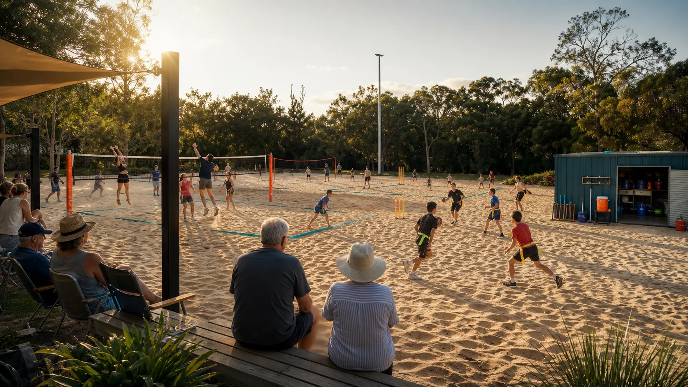
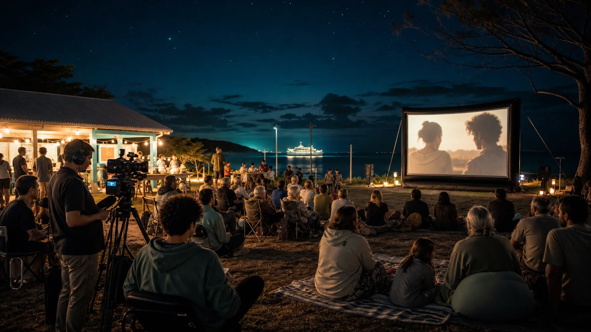
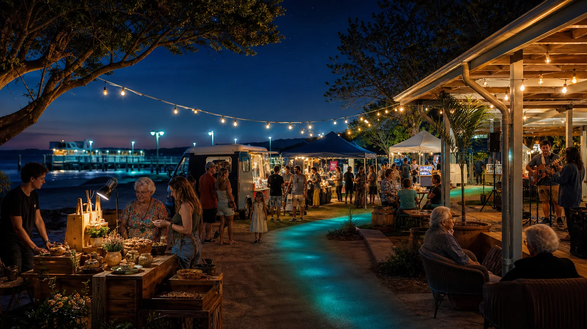
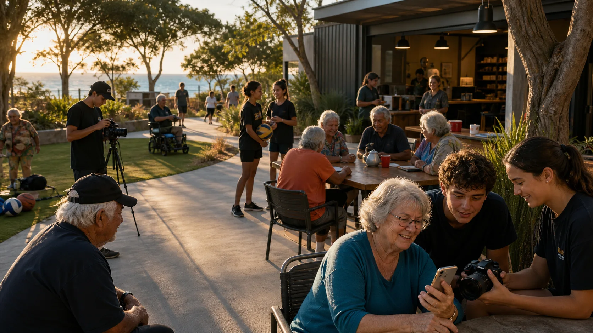
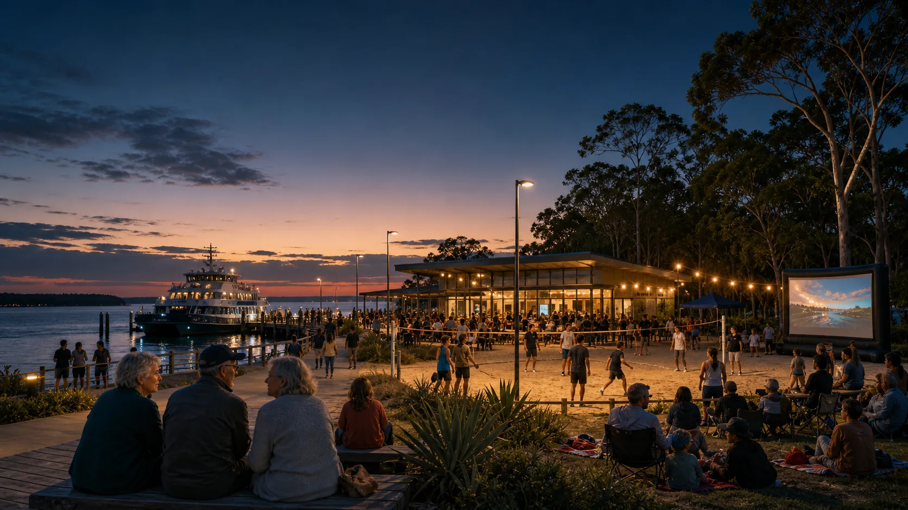
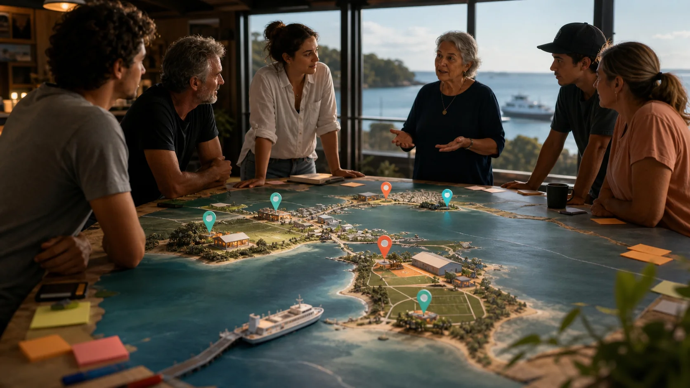
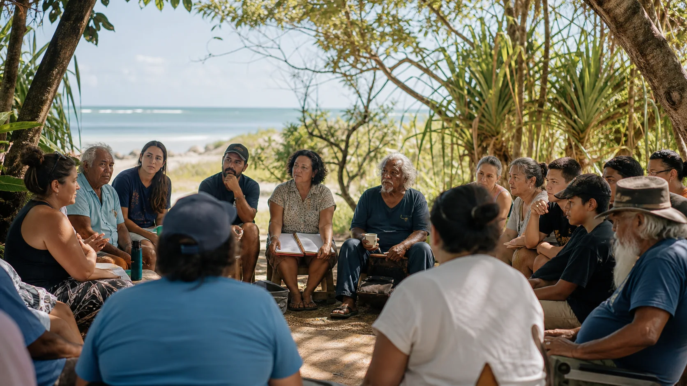
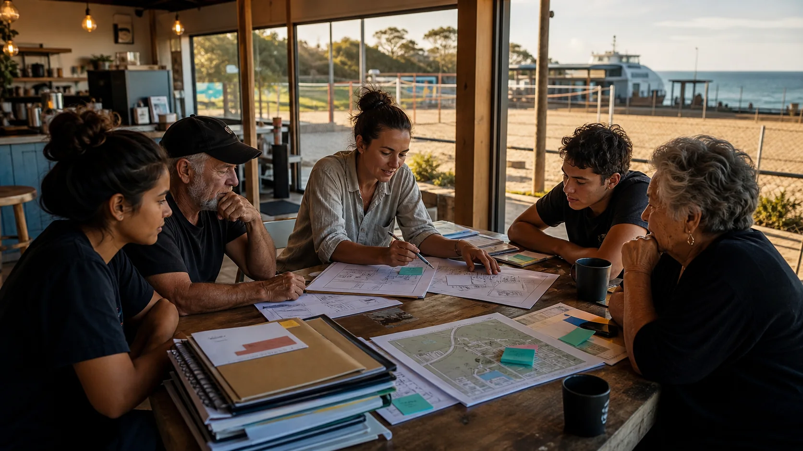
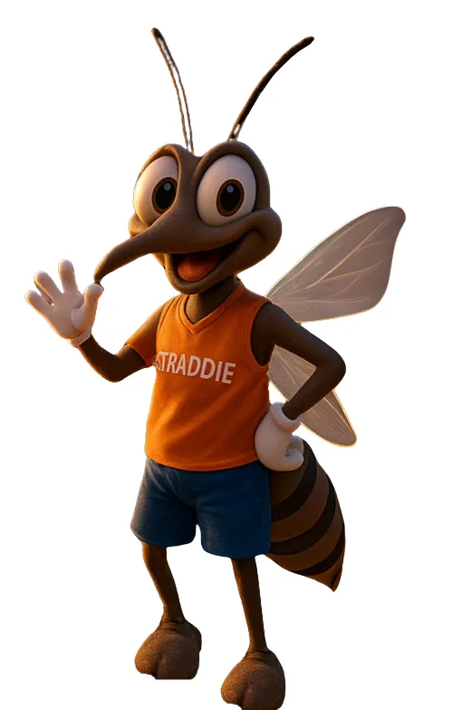

🏐 Anchor programme
Mixed beach volleyball
Social games, skills sessions, mixed ladders and invitationals. Format, age groups and access arrangements are for a founding group to design.

A club proposal for the world's second-largest sand island
Imagine mixed beach volleyball at the centre of a welcoming sand sports network across Dunwich/Goompi, Amity Point and Point Lookout. Local clubs could try another surface, join a sand carnival and stay for a film, market or festival.
Concept illustration, not an existing Straddie facility.
The sporting heart
Mixed social volleyball can make the first invitation simple. Keep pathways open for beginners, returning players and skilled competitors, then share the sand with other island sports clubs and formats.
Social games, skills sessions, mixed ladders and invitationals. Format, age groups and access arrangements are for a founding group to design.
Invite existing cricket teams to test a softer surface, flexible boundaries and festival formats. A larger open zone needs a separate footprint.
Work with football clubs on mixed and youth-friendly sand sessions, training and exhibition matches. Plan for goals, run-off and safe circulation.
Beach handball, touch, roundnet, fitness and modified games can rotate through a shared area when clubs lead their own programme.
Each existing club keeps its identity and people. Share a new surface, cross-code days, equipment, coaches, volunteers and joint events where there is real agreement.
The images in this proposal are illustrative. No image is evidence of built courts or agreed programming.
The day can grow around the play
These are programme ideas, not scheduled events. The sports footprint and its calendar come first; the screen and cultural layers can be developed with the people who would deliver them.

Post-game films, local shorts, documentary nights and a possible connection to the Minjerribah Screen Media Network.
Explore the screen network
Local makers, food stalls and practical island enterprise can turn a sports meet into a reason to linger and return.
Explore the market lab
Potential Indigenous and non-Indigenous creative programmes need genuine invitation, consent, cultural leadership and separate agreements.
Explore the film proposalBrisbane 2032 horizon
An island-hosted exhibition could pair local clubs and mixed sport with visiting communities, food, arts, film and conversations about the Games. This is a proposed community opportunity, not a Games event or affiliation.
A distributed club
Minjerribah's coast is dynamic. Storms, cyclones and erosion make a dependable inland or reserve option worth exploring alongside temporary beach play. A club could develop one place first and grow to several.

Investigate 10–12 Ballow Road and the former silica sand loading area at the end of Cunningham Road as separate possibilities. Access, tenure, environmental history, utilities, neighbours and permission are unknowns.
Ballow Road concept
Explore the Amity sports and recreation reserve for local sessions and a repeatable club rhythm. Any layout, sand surface, access and approval would need site work.
Related Amity workExplore the sports park opposite the bowls club for shared club sessions and visitor-facing days. Discuss fit and coexistence with the current users before drawing a footprint.
Test a footprintInteractive space planner
Set a sport, the number of activity zones and a buffer. The calculation is a rectangular planning envelope, not a site survey, construction design or permit test.
*Area comparison only, not a promise that volleyball courts fit inside a cricket or football zone. Space for run-off, spectators, access paths, shade, toilets, storage, event logistics and ecological buffers must be assessed separately. Beach cricket defaults are editable working assumptions because social formats vary. FIVB rules · Beach soccer laws.
From the PLFC clubhouse idea
The Point Lookout Fishing Club demo shows how a public front door and private committee tools can work together. Sandy Sports needs its own decisions, roles and records before anyone activates member accounts or takes payment.
Sessions, shared club dates, weather changes, location notices and a public calendar only when activities are confirmed.
Interest lists, teams, ladders, equipment, coaches, accessible formats and an easy way to include partner clubs.
Meetings, role handovers, grant evidence, stock, budgets, insurance and approvals with human review.
Run sheets for screens, markets and expos, including artist permissions, suppliers, transport and pack-down.

A working model to adapt
Use short roles, backup organisers and transparent decisions. The existing club builder and the PLFC demo are reference models, not a Sandy Sports membership system.
Make funding match the stage
These are research pathways, not open-round promises or eligibility decisions. Confirm each programme's current guidelines before spending money or applying.

Portable nets, balls, first aid, training and a reliable volunteer roster. Check Queensland sport funding including Active Clubs and Club House Grant against current eligibility.
Queensland sport fundingRedland grants cover community, sport, events and arts streams. A film or market grant needs its own purpose, eligible organiser, approvals and budget.
Council grantsAfter land, partners and usage are established, assess infrastructure pathways such as Games On! against the actual round and applicant rules.
Games On! informationThe first conversation
Players, clubs, coaches, artists, stallholders and neighbours can help test the idea. Use the local brief builder to make a short note you can copy or download. It saves only in your browser until you choose to share it.

Mozzie says: “Pick a town, pick a game, and tell us what would make it work. No mystery membership fee, mate!”